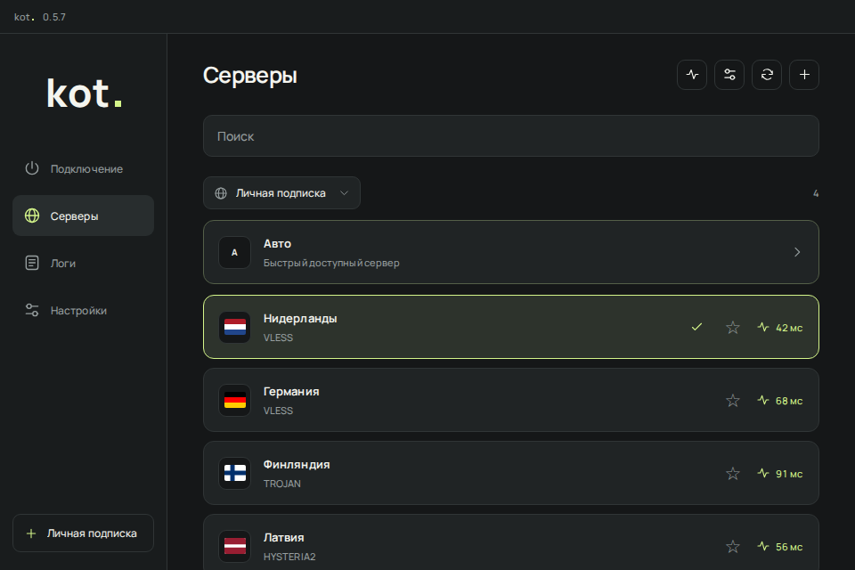
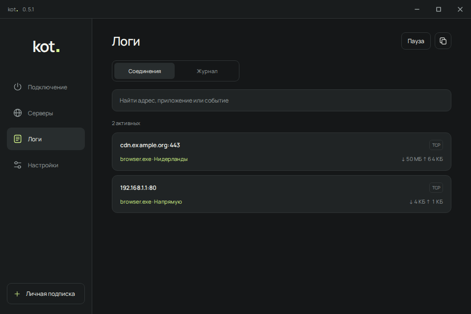
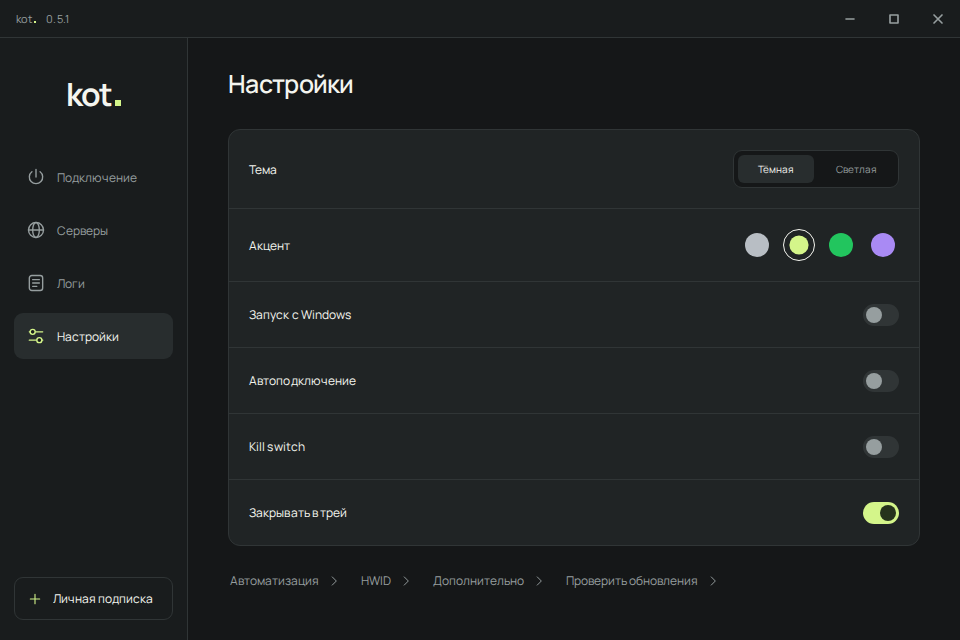

Kill switch
При сбое подключения блокирует прямой интернет. Включается в настройках.
Добавь подписку, выбери сервер
и подключись. Всё остальное
уже под рукой.
Это демо. Серверы и трафик для примера, настоящего подключения нет.
Что ещё внутриВНУТРИ ПРИЛОЖЕНИЯ
Серверы отдельно. Соединения отдельно.
Нужное не приходится искать.
Проверь задержку и сохрани любимые серверы. Режим «Авто» сам выберет быстрый доступный сервер.



При сбое подключения блокирует прямой интернет. Включается в настройках.
Скачивает новые версии с GitHub и устанавливает их. Подписки и настройки сохраняются.
Если что-то пошло не так, открой журнал. Полный лог можно скопировать одной кнопкой.
ПЕРВЫЙ ЗАПУСК
Скачай Setup и запусти его.
Как обычную программу.
Нажми «+» и вставь свою ссылку
на подписку или сервер.
Выбери сервер и нажми
кнопку подключения.
Серверы и подписки в комплект не входят. Используй свою ссылку.
На Windows 10 и 11, x64. Для подключения через TUN нужны права администратора. Установщик поставит необходимые компоненты.
Само приложение бесплатное. Доступ к серверу или подписку ты добавляешь сам: kot. их не продаёт и не выдаёт.
Приложение проверяет GitHub при запуске и раз в сутки. Новую версию скачивает и устанавливает само, проверив подпись. В настройках есть кнопка «Проверить обновления».
При ошибке подключения или падении программы прямой интернет остаётся заблокирован. Подключись снова или выключи защиту в настройках. Ручное отключение и обычный выход снимают блокировку. Явно настроенные прямые маршруты sing-box продолжают действовать.
Открой Issues на GitHub и опиши, что случилось. Если прикладываешь лог, сначала убери из него личные данные и ссылки на подписки.
KOT. ДЛЯ WINDOWS
Обычный установщик. Всё нужное внутри.